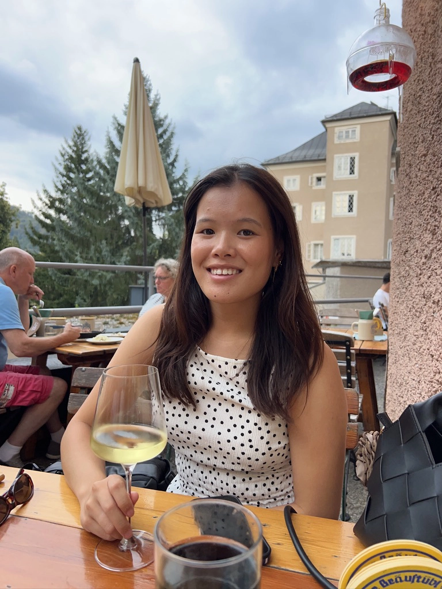
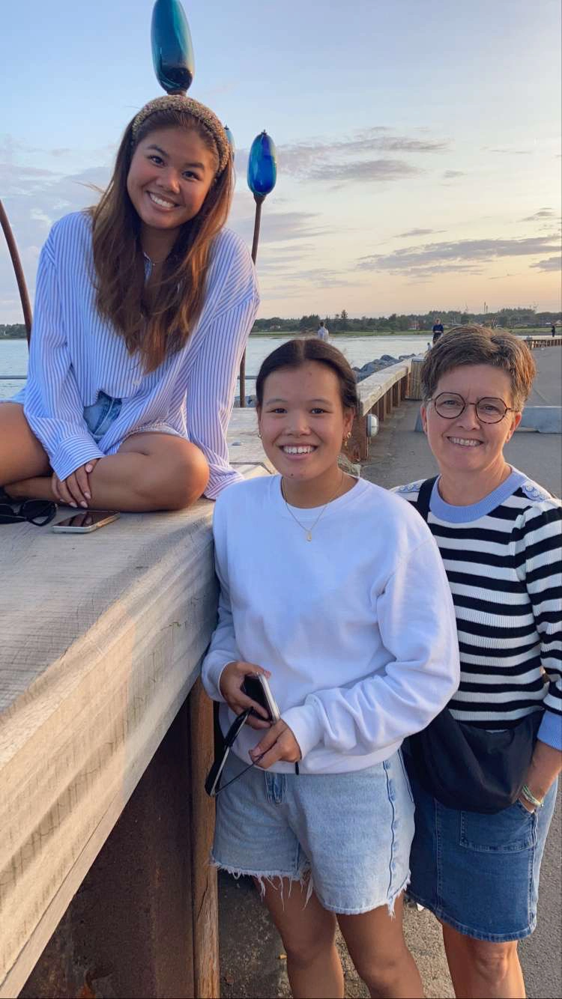
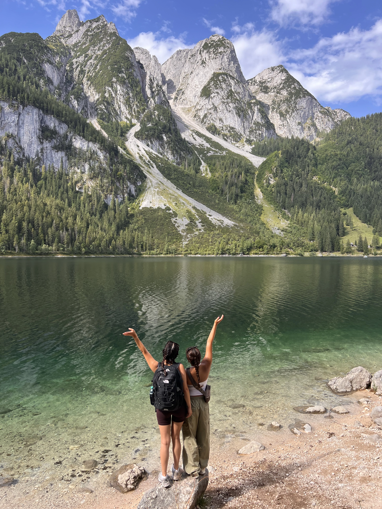

Ansvarlig og pålidelig
Jeg tager ansvar for mine opgaver og følger dem til dørs. Jeg er stabil og samvittighedsfuld, og det betyder meget for mig, at mine kolleger ved, at de kan regne med mig.
</> Om mig
Jeg er en positiv og imødekommende person, der sætter pris på nærvær og gode relationer. Jeg trives i fællesskaber, hvor man kan være sig selv, og hvor der er plads til gode samtaler, humor og til at hjælpe hinanden.
I min fritid finder jeg ro i at fordybe mig i noget kreativt, som at male eller spille klaver. Jeg holder også af at rejse og opleve nye steder, men prioriterer lige så gerne tid med min familie herhjemme.

Jeg tager ansvar for mine opgaver og følger dem til dørs. Jeg er stabil og samvittighedsfuld, og det betyder meget for mig, at mine kolleger ved, at de kan regne med mig.
Jeg møder andre med ro og giver mig tid til at lytte. Jeg er god til at fornemme stemningen i et team og prøver altid at forstå andres synspunkter, før jeg danner mig mit eget. I uenigheder søger jeg en løsning, alle kan stå inde for.
Jeg møder folk åbent og er opmærksom på, hvordan mine kolleger har det. Jeg gør gerne en indsats for at hjælpe andre, og jeg trives bedst i et team, hvor vi bakker hinanden op og har det godt sammen.
Jeg forbereder mig grundigt og vil gerne have styr på tingene, før jeg går i gang. Når jeg koder et layout, sørger jeg for, at det hænger sammen helt ned i detaljen.
</> Når jeg kobler af

